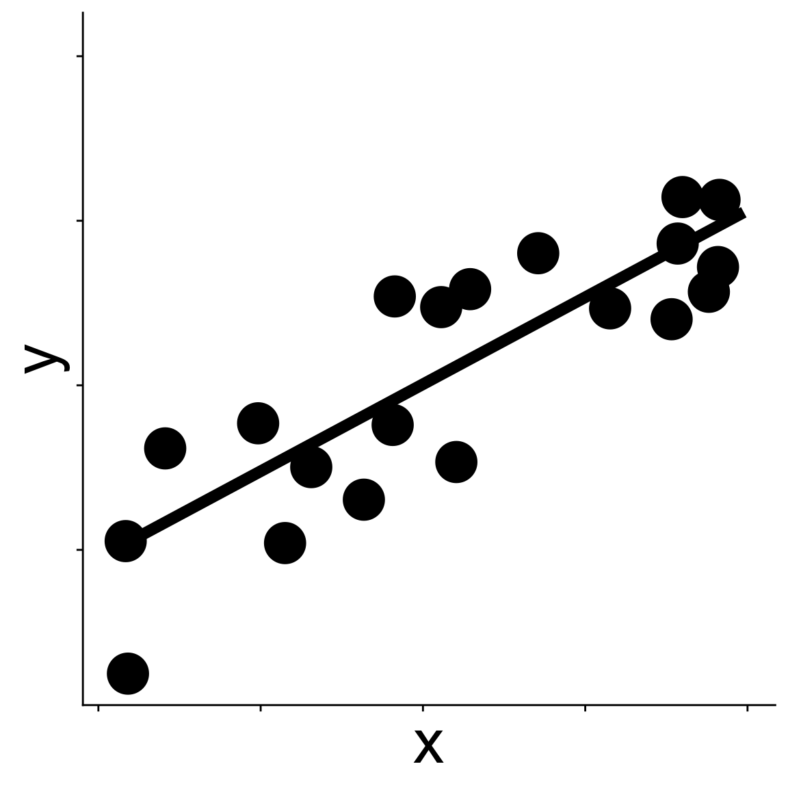
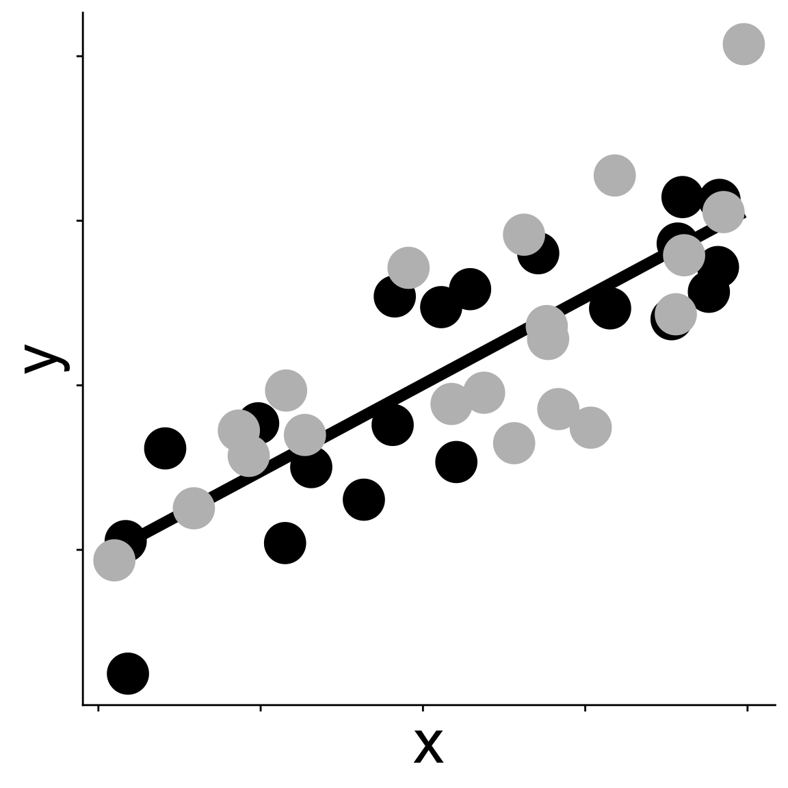

[1] 2321.152[1] 2314.374Temperature or Human Impact?
We saw that including both in one model had problem of collinearity
But does one predict richness better than another?
We cannot use LRT because these are not nested models, in fact they have the same d.f.
\[ \begin{aligned} \log(\mu_\text{spp richness}) &= b_0 + b_1 \log(\text{area}) + b_2 \text{temperature} \\ \log(\mu_\text{spp richness}) &= b_0 + b_1 \log(\text{area}) + b_2 (\text{human impact}) \end{aligned} \]
Akaike Information Criterion
\[ AIC = -2 \mathcal{l}(\hat{\theta}_{MLE}) + 2k \]
We can compare non-nested models with AIC
\[ AIC = -2 \mathcal{l}(\hat{\theta}_{MLE}) + 2k \]
[1] 2321.152[1] 2314.374The human impact model is better supported (lower AIC)
\[ AIC = -2 \mathcal{l}(\hat{\theta}_{MLE}) + 2k \]
Purpose of \(2k\) term is more clear for models with unequal d.f.
[1] 2297.937[1] 2314.374Now the temp + rain model is better supported
But…
adding parameters will always increase log likelihood
Is the increase real? Or just “over fitting”
“over fitting” is a term for what we know already: more parameters could let a model wiggle to fit noise
How? and why?
Imagine you have one data set

and fit a model to it by maximizing likelihood.
Imagine you have one data set then collect a new one

and calculate the log likelihood of the new data given the same model fit to the first data
How? and why?
Imagine you have one data set

and fit a model to it by maximizing likelihood.
How? and why?
Imagine you have one data set then collect a new one

We could calculate the log likelihood for the new data but with parameter estimates from original model
The difference between the mean log likelihood of the original data and the mean log likelihood of the new data will be about \(k\)
\[ \frac{1}{n} \mathcal{l}(\hat{\theta} \mid \text{data}_\text{orig}) - \frac{1}{n} \mathcal{l}(\hat{\theta} \mid \text{data}_\text{new}) \approx k \]
So AIC is trying to account for the chance that additional parameters are just fitting noise by including a penalty for those additional parameters
We can rest assured that the improvement in AIC for the temp + rain model is not due just to adding antother parameter
A common rule is that models with AIC values within 2 points are effectively equivalent; \(>2\) means one model really is better supported (Burnham & Anderson 2002)
Consider the 3 models we have made so far
Each model makes a different prediction about the expected number of species in a plot
How could we combine the models to make one prediction?
Why do we want to?
Consider the 3 models we have made so far
The predictions from the combined model will be more accurate than any one model by itself
How do we combine models to make one prediction?
We could average the parameters of each model to make an average model
\[ \begin{aligned} \log(\mu_\text{nspp}) = &b_0^{\text(avg.)} + b_1^{\text(avg.)} \log(\text{area}) + b_2^{\text(avg.)} \text{hii} + \\ &b_3^{\text(avg.)} \text{temp} + b_4^{\text(avg.)} \text{rain} \end{aligned} \]
where, e.g., \(b_3^{\text(avg.)}\) is the average of all slope estimates for avg_temp_annual_c across all the models
Let’s make that more concrete with our actual models.
Here are the slope estimates for temperature in every model where it shows up
So the average slope is \(b_3^{\text(avg.)} = \frac{0.024 + 0.028}{2} = 0.026\)
Note: there are two ways to average
average over only models where the variable shows up
\(b_3^{\text(avg.)} = \frac{0.024 + 0.028}{2}\)
average over all models no matter if the variable shows up
\(b_3^{\text(avg.)} = \frac{0 + 0.024 + 0.028}{3}\)
The default in the code we’ll use for model average is to use only models where the variable shows up
But this simple average parameter value ignores the fact that some individual models are already better at making predictions
The AIC values tell us about the support of each model
We want to account for these differences in support when averaging
We turn AIC values into weights. For model \(i\):
\[ w_i = \frac{e^{-\Delta\text{AIC}_i / 2}}{\sum_j e^{-\Delta\text{AIC}_j / 2}} \]
where \(\Delta\text{AIC}_i = \text{AIC}(\text{model}_i) - (\text{minimum AIC})\)
The weights sum to 1, they can be roughly interpreted as the probability that \(\text{model}_i\) is the best supported model
Again, let’s make this concrete
Create the averaged model
Look at a similar table of AIC, \(\Delta\)AIC, and weights
df logLik AICc delta weight
134 5 -1143.968 2298.052 0.00000 9.997160e-01
23 4 -1153.187 2314.451 16.39911 2.746982e-04
13 4 -1156.576 2321.229 23.17712 9.268898e-06A few things to note:
AICc is a sample size corrected version AIC, not a bad idea to use
You can get AICc with the AICc function from MuMIn
[1] 2297.937[1] 2298.052Our sample size is large, so the correction is small
MuMIn lets us do some things we maybe shouldn’t
dredgeBut dredge-ing can be useful for identifying which variables in our data are most “meaningful”
dredge up all modelsVariable importance via summed weights
log(Plot_Area) rain_annual_mm hii avg_temp_annual_c
Sum of weights: 1.00 1.00 0.99 0.45
N containing models: 8 8 8 8 So area is important (no surprise). But a new insight: human impact and rain are quite important, and temperature less so